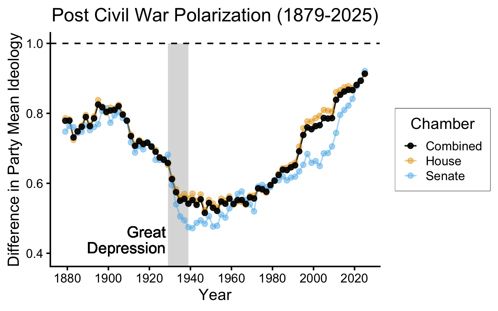
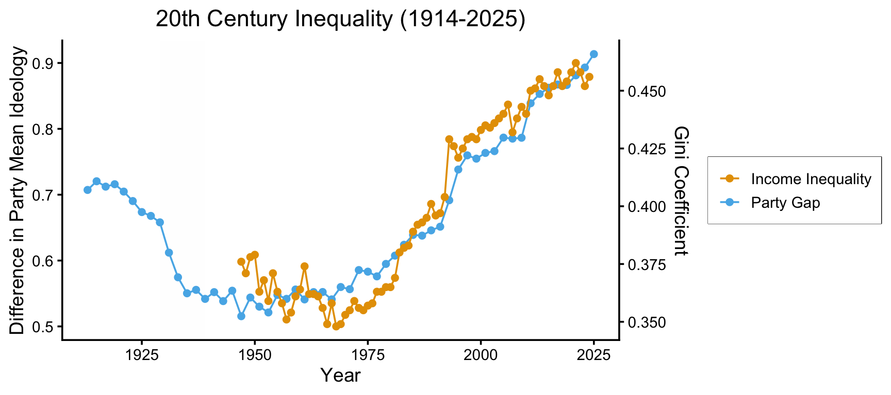
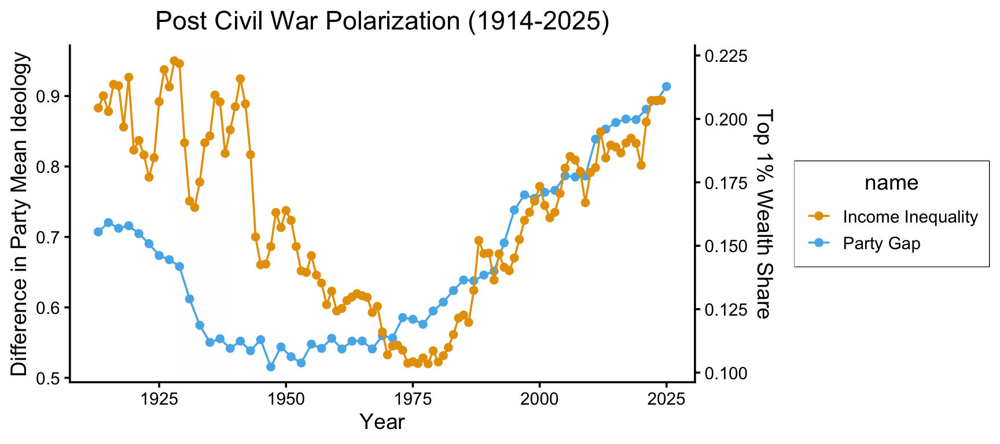
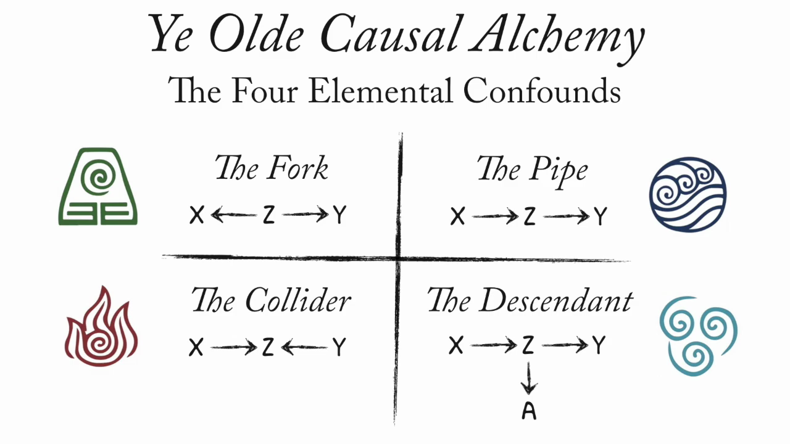
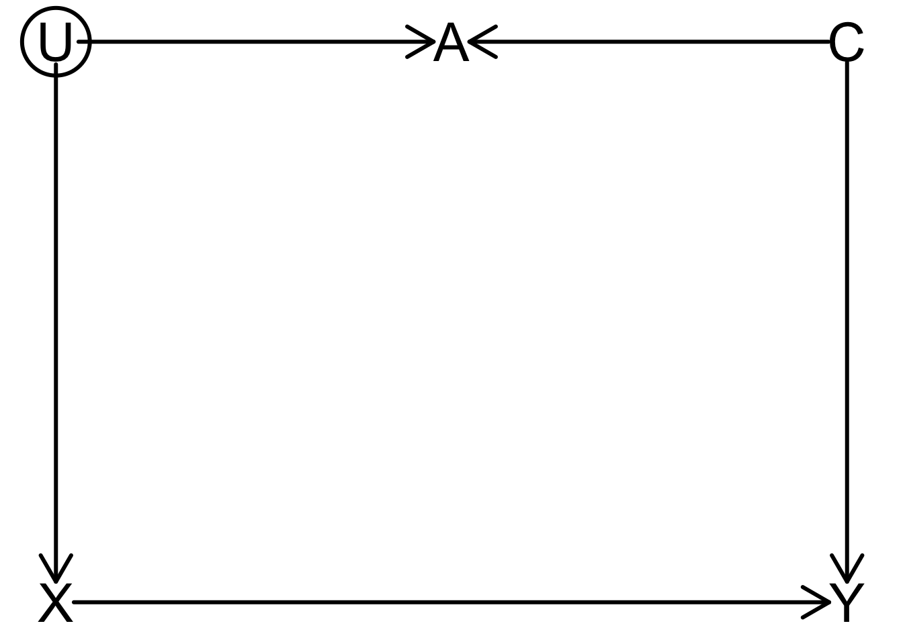
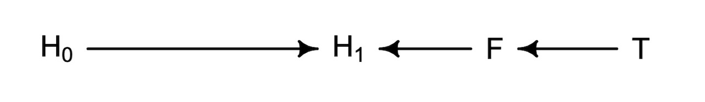
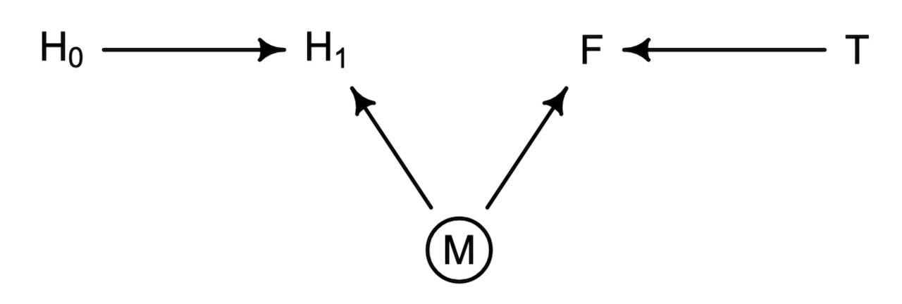

Code
source("../dsan-globals/_globals.r")DSAN 5650: Causal Inference for Computational Social Science
Summer 2026, Georgetown University
Today’s Planned Schedule:
| Start | End | Topic | |
|---|---|---|---|
| Lecture | 6:30pm | 6:45pm | Reading Adventure 2, HW2 → |
| 6:45pm | 7:30pm | The Logic of PGMs and Testable Hypotheses → | |
| 6:45pm | 7:30pm | Applying \(\textsf{do}()\) → | |
| Break! | 7:50pm | 8:00pm | |
| 8:00pm | 9:00pm | Closing Backdoor Paths → |
\[ \DeclareMathOperator*{\argmax}{argmax} \DeclareMathOperator*{\argmin}{argmin} \newcommand{\bigexp}[1]{\exp\mkern-4mu\left[ #1 \right]} \newcommand{\bigexpect}[1]{\mathbb{E}\mkern-4mu \left[ #1 \right]} \newcommand{\definedas}{\overset{\small\text{def}}{=}} \newcommand{\definedalign}{\overset{\phantom{\text{defn}}}{=}} \newcommand{\eqeventual}{\overset{\text{eventually}}{=}} \newcommand{\Err}{\text{Err}} \newcommand{\expect}[1]{\mathbb{E}[#1]} \newcommand{\expectsq}[1]{\mathbb{E}^2[#1]} \newcommand{\fw}[1]{\texttt{#1}} \newcommand{\given}{\mid} \newcommand{\green}[1]{\color{green}{#1}} \newcommand{\heads}{\outcome{heads}} \newcommand{\iid}{\overset{\text{\small{iid}}}{\sim}} \newcommand{\lik}{\mathcal{L}} \newcommand{\loglik}{\ell} \DeclareMathOperator*{\maximize}{maximize} \DeclareMathOperator*{\minimize}{minimize} \newcommand{\mle}{\textsf{ML}} \newcommand{\nimplies}{\;\not\!\!\!\!\implies} \newcommand{\orange}[1]{\color{orange}{#1}} \newcommand{\outcome}[1]{\textsf{#1}} \newcommand{\param}[1]{{\color{purple} #1}} \newcommand{\pgsamplespace}{\{\green{1},\green{2},\green{3},\purp{4},\purp{5},\purp{6}\}} \newcommand{\pedge}[2]{\require{enclose}\enclose{circle}{~{#1}~} \rightarrow \; \enclose{circle}{\kern.01em {#2}~\kern.01em}} \newcommand{\pnode}[1]{\require{enclose}\enclose{circle}{\kern.1em {#1} \kern.1em}} \newcommand{\ponode}[1]{\require{enclose}\enclose{box}[background=lightgray]{{#1}}} \newcommand{\pnodesp}[1]{\require{enclose}\enclose{circle}{~{#1}~}} \newcommand{\purp}[1]{\color{purple}{#1}} \newcommand{\sign}{\text{Sign}} \newcommand{\spacecap}{\; \cap \;} \newcommand{\spacewedge}{\; \wedge \;} \newcommand{\tails}{\outcome{tails}} \newcommand{\Var}[1]{\text{Var}[#1]} \newcommand{\bigVar}[1]{\text{Var}\mkern-4mu \left[ #1 \right]} \]
source("../dsan-globals/_globals.r")library(tidyverse) # For ggplot── Attaching core tidyverse packages ──────────────────────── tidyverse 2.0.0 ──
✔ dplyr 1.2.1 ✔ readr 2.2.0
✔ forcats 1.0.1 ✔ stringr 1.6.0
✔ lubridate 1.9.5 ✔ tibble 3.3.1
✔ purrr 1.2.1 ✔ tidyr 1.3.2
── Conflicts ────────────────────────────────────────── tidyverse_conflicts() ──
✖ dplyr::filter() masks stats::filter()
✖ dplyr::lag() masks stats::lag()
ℹ Use the conflicted package (<http://conflicted.r-lib.org/>) to force all conflicts to become errorslibrary(extraDistr) # For rbern()
Attaching package: 'extraDistr'
The following object is masked from 'package:purrr':
rduniflibrary(patchwork) # For side-by-side plotting
library(ggtext) # For colors in titles
library(rethinking)Loading required package: cmdstanr
This is cmdstanr version 0.9.0
- CmdStanR documentation and vignettes: mc-stan.org/cmdstanr
- CmdStan path: /Users/jpj/.cmdstan/cmdstan-2.36.0
- CmdStan version: 2.36.0
A newer version of CmdStan is available. See ?install_cmdstan() to install it.
To disable this check set option or environment variable cmdstanr_no_ver_check=TRUE.
Loading required package: posterior
This is posterior version 1.7.0
Attaching package: 'posterior'
The following objects are masked from 'package:stats':
mad, sd, var
The following objects are masked from 'package:base':
%in%, match
Loading required package: parallel
rethinking (Version 2.42)
Attaching package: 'rethinking'
The following objects are masked from 'package:extraDistr':
dbern, dlaplace, dpareto, rbern, rlaplace, rpareto
The following object is masked from 'package:purrr':
map
The following object is masked from 'package:stats':
rstudentlibrary(dagitty)
n_d <- 10000 # For discrete RVs
n_c <- 300 # For continuous RVs
source("mydrawdag.r")congress_comb_df <- read_csv("assets/congress_means.csv") |>
rename(Chamber = chamber)Rows: 222 Columns: 24
── Column specification ────────────────────────────────────────────────────────
Delimiter: ","
chr (1): chamber
dbl (23): congress, year, party.mean.diff.d1, prop.moderate.d1, prop.moderat...
ℹ Use `spec()` to retrieve the full column specification for this data.
ℹ Specify the column types or set `show_col_types = FALSE` to quiet this message.gap_top <- 1.0 - max(congress_comb_df$party.mean.diff.d1)
plot_ymin <- min(congress_comb_df$party.mean.diff.d1) - gap_top
congress_comb_df |>
ggplot(aes(x=year, y=party.mean.diff.d1, color=Chamber, alpha=Chamber)) +
# geom_rect(
# aes(xmin = 1941, xmax = 1945, ymin = -Inf, ymax = 1.0),
# fill = "grey", alpha = 0.01, inherit.aes=FALSE,
# ) +
geom_rect(
aes(xmin = 1929, xmax = 1939, ymin = -Inf, ymax = 1.0),
fill = "grey", alpha = 0.01, inherit.aes=FALSE,
) +
geom_text(
aes(
x=1929-1, y=0.4,
label="Great\nDepression",
hjust=1.0, vjust=0.0, lineheight=0.85
),
inherit.aes=FALSE
) +
geom_line() +
geom_point() +
theme_dsan(base_size=18) +
ylim(plot_ymin, 1.0) +
geom_hline(yintercept=1.0, linetype='dashed') +
scale_x_continuous(breaks = seq(1880, 2025, by=20)) +
scale_color_manual(
values=c("Combined"="black", "House"="#e69f00", "Senate"="#56b4e9")
) +
scale_alpha_manual(
values=c("Combined"=0.9, "House"=0.45, "Senate"=0.45),
) +
labs(
title="Post Civil War Polarization (1879-2025)",
x="Year",
y="Difference in Party Mean Ideology",
)Warning in geom_rect(aes(xmin = 1929, xmax = 1939, ymin = -Inf, ymax = 1), : All aesthetics have length 1, but the data has 222 rows.
ℹ Please consider using `annotate()` or provide this layer with data containing
a single row.Warning in geom_text(aes(x = 1929 - 1, y = 0.4, label = "Great\nDepression", : All aesthetics have length 1, but the data has 222 rows.
ℹ Please consider using `annotate()` or provide this layer with data containing
a single row.
gini_df <- read_csv("assets/mod_gini.csv")Rows: 112 Columns: 4
── Column specification ────────────────────────────────────────────────────────
Delimiter: ","
chr (1): name
dbl (3): year, value, gini_scaled
ℹ Use `spec()` to retrieve the full column specification for this data.
ℹ Specify the column types or set `show_col_types = FALSE` to quiet this message.mod_congress_df <- read_csv("assets/mod_congress.csv")Rows: 57 Columns: 3
── Column specification ────────────────────────────────────────────────────────
Delimiter: ","
chr (1): name
dbl (2): year, value
ℹ Use `spec()` to retrieve the full column specification for this data.
ℹ Specify the column types or set `show_col_types = FALSE` to quiet this message.invert_rescale_gini <- function(scaled_vals, old_min, old_max, new_min, new_max) {
old_min <- 0.348
old_max <- 0.462
new_min <- 0.5
new_max <- 0.9
inv_factor <- (scaled_vals - new_min) / (new_max - new_min)
return(
inv_factor * (old_max - old_min) + old_min
)
}
ggplot() +
# geom_rect(
# aes(xmin = 1941, xmax = 1945, ymin = -Inf, ymax = 1.0),
# fill = "grey", alpha = 0.01, inherit.aes=FALSE,
# ) +
geom_rect(
aes(xmin = 1929, xmax = 1939, ymin = -Inf, ymax = Inf),
fill = "grey", alpha = 0.01, inherit.aes=FALSE,
) +
# geom_text(
# aes(
# x=1929-1, y=0.4,
# label="Great\nDepression",
# hjust=1.0, vjust=0.0, lineheight=0.85
# ),
# inherit.aes=FALSE
# ) +
geom_line(data=mod_congress_df, aes(x=year, y=value, color=name)) +
geom_point(data=mod_congress_df, aes(x=year, y=value, color=name)) +
geom_line(data=gini_df, aes(x=year, y=gini_scaled, color=name)) +
geom_point(data=gini_df, aes(x=year, y=gini_scaled, color=name)) +
theme_dsan(base_size=14) +
scale_y_continuous(
"Difference in Party Mean Ideology",
sec.axis = sec_axis(~ invert_rescale_gini(.), name = "Gini Coefficient")
) +
labs(
title="20th Century Inequality (1914-2025)",
x="Year",
y="Difference in Party Mean Ideology",
) +
theme(legend.title = element_blank())Warning: Removed 34 rows containing missing values or values outside the scale range
(`geom_line()`).Warning: Removed 34 rows containing missing values or values outside the scale range
(`geom_point()`).
cong_gini_df <- inner_join(gini_df, mod_congress_df, by=join_by(year))
cor(cong_gini_df$value.x, cong_gini_df$value.y, use="complete.obs")[1] 0.9671485income_df <- read_csv("assets/income_ineq.csv")Rows: 112 Columns: 3
── Column specification ────────────────────────────────────────────────────────
Delimiter: ","
chr (1): name
dbl (2): year, value
ℹ Use `spec()` to retrieve the full column specification for this data.
ℹ Specify the column types or set `show_col_types = FALSE` to quiet this message.invert_rescale_income <- function(scaled_vals, old_min, old_max, new_min, new_max) {
old_min <- 0.1035
old_max <- 0.2229
new_min <- 0.52
new_max <- 0.95
inv_factor <- (scaled_vals - new_min) / (new_max - new_min)
return(
inv_factor * (old_max - old_min) + old_min
)
}
ggplot() +
# geom_rect(
# aes(xmin = 1941, xmax = 1945, ymin = -Inf, ymax = 1.0),
# fill = "grey", alpha = 0.01, inherit.aes=FALSE,
# ) +
geom_rect(
aes(xmin = 1929, xmax = 1939, ymin = -Inf, ymax = Inf),
fill = "grey", alpha = 0.01, inherit.aes=FALSE,
) +
# geom_text(
# aes(
# x=1929-1, y=0.4,
# label="Great\nDepression",
# hjust=1.0, vjust=0.0, lineheight=0.85
# ),
# inherit.aes=FALSE
# ) +
geom_line(data=mod_congress_df, aes(x=year, y=value, color=name)) +
geom_point(data=mod_congress_df, aes(x=year, y=value, color=name)) +
geom_line(data=income_df, aes(x=year, y=value, color=name)) +
geom_point(data=income_df, aes(x=year, y=value, color=name)) +
theme_dsan(base_size=14) +
scale_y_continuous(
"Difference in Party Mean Ideology",
sec.axis = sec_axis(~ invert_rescale_income(.), name = "Top 1% Wealth Share")
) +
labs(
title="Post Civil War Polarization (1914-2025)",
x="Year",
)
cong_income_df <- inner_join(income_df, mod_congress_df, by=join_by(year))
cong_income_mod_df <- cong_income_df |> filter(year >= 1970)
cor(cong_income_mod_df$value.x, cong_income_mod_df$value.y, use="complete.obs")[1] 0.9768329
We will open and look at it today after the break!

dagitty: R interface to dagitty.net
rt_dag <- dagitty("dag{
X [exposure]
Y [outcome]
U [unobserved]
X -> Y
X <- U <- A -> C -> Y
U -> B <- C
}")
coordinates(rt_dag) <- list(
x=c(U=0, X=0, A=0.5, B=0.5, C=1, Y=1),
y=c(X=0.75, Y=0.75, B=0.5, U=0.25, C=0.25, A=0)
)
drawdag_jj(
rt_dag, cex=2.5, lwd=3, radius=7, arr.width=0.6, arr.length=0.6, shift_arrows=FALSE
)
Two backdoor paths!
\(X \leftarrow \require{enclose}\enclose{circle}{U} \leftarrow A \rightarrow C \rightarrow Y\): Open or closed?
\(X \leftarrow \require{enclose}\enclose{circle}{U} \rightarrow B \leftarrow C \rightarrow Y\): Open or closed?
adjustmentSets(rt_dag){ C }
{ A }rt_dag <- dagitty("dag{
X [exposure]
Y [outcome]
U [unobserved]
X -> Y
X <- U
Y <- C
U -> A <- C
}")
coordinates(rt_dag) <- list(
x=c(U=0, X=0, A=0.5, C=1, Y=1),
y=c(X=0.75, Y=0.75, U=0.25, C=0.25, A=0.25)
)
drawdag_jj(
rt_dag, cex=2.5, lwd=3, radius=7, arr.width=0.6, arr.length=0.6, shift_arrows=FALSE
)
Backdoor paths?
Adjustments needed?
rt_dag <- dagitty("dag{
X [exposure]
Y [outcome]
U [unobserved]
X -> Y
X <- U
Y <- C
U -> A <- C
}")
coordinates(rt_dag) <- list(
x=c(U=0, X=0, A=0.5, C=1, Y=1),
y=c(X=0.75, Y=0.75, U=0.25, C=0.25, A=0.25)
)
drawdag_jj(
rt_dag, cex=2.5, lwd=3, radius=7, arr.width=0.6, arr.length=0.6, shift_arrows=FALSE
)
Backdoor paths?
\(X \leftarrow \require{enclose}\enclose{circle}{U} \rightarrow A \leftarrow C \rightarrow Y\): Closed
Adjustments needed?
adjustmentSets(rt_dag){}
impliedConditionalIndependencies(plant_dag)F _||_ H_0
H_0 _||_ T
H_1 _||_ T | F